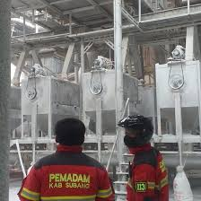

Kecamatan Patokbeusi memiliki beberapa sektor industri dan usaha yang berkembang untuk mendukung perekonomian masyarakat.
Industri kecil dan menengah menjadi salah satu sektor yang cukup berkembang terutama dalam bidang makanan, perdagangan, dan pengolahan hasil pertanian.
Keberadaan industri di wilayah Kecamatan Patokbeusi memberikan peluang kerja bagi masyarakat sekitar serta membantu meningkatkan pendapatan daerah.
| No | Nama Industri | Bidang |
|---|---|---|
| 1 | Penggilingan Padi Makmur | Pertanian |
| 2 | UD Sumber Rezeki | Perdagangan |
| 3 | CV Maju Jaya | Makanan |
| 4 | Industri Kerupuk Patokbeusi | Kuliner |
| 5 | PT Budi makmur perkasa | Beras |
Pemerintah kecamatan terus mendukung perkembangan industri lokal agar mampu bersaing dan memberikan manfaat yang lebih besar bagi masyarakat.